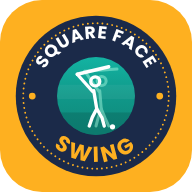

Square Face Swing
Analyse sur ton téléphone, aucune vidéo envoyée · v3
Démo
Mon swing
Aucune vidéo
Importer
Référence
Aucune vidéo
Importer
Analyse en cours…
Adresse
Moi 0,00 s
Réf 0,00 s
× 1
× 0,5
× 0,25
× 0,1
Adresse
Top
Impact